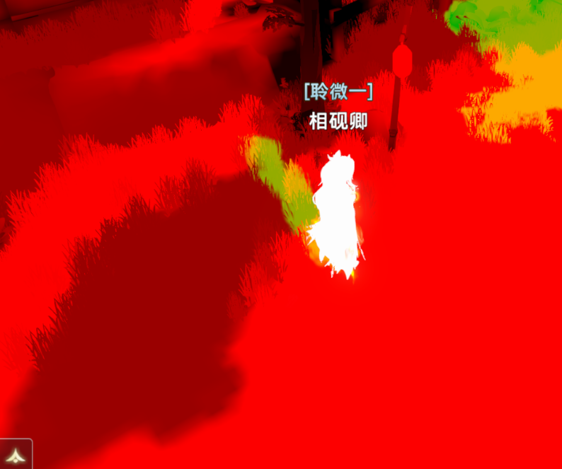
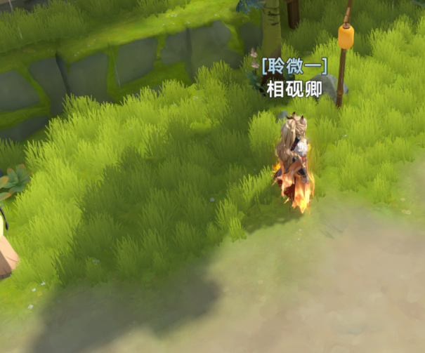

Unity-GPUDriven草地渲染
记录一下YCT里GPUDriven 草地渲染实现。
1.静态数据烘焙
使用地形均匀网格Mesh和美术画的草地Mask，生成草地的分布数据。
方法是遍历Mesh的三角形，用三角形UV去采样Mask，如果三个顶点都在Mask上是处于草地分布的，就保留顶点数据到草地分布List里。
2.草地脚本生产GrassInfo
自定义一个GrassInfo的Struct结构，用于上传ComputerShader。
遍历草地分布的三角形，通过插片分布、计算法线、随机旋转的操作，生成具体的GrassInfo数据。
GrassInfo包含草地的transform数据，以及lightmapUV数据。
因为草是依赖地形生成，可以采样地形的ShadowMask，在树和房子下面的草地有阴影效果更好。


3.草地脚本GPU数据上传
GrassInfo数据在生成结束后，上传到CS StructedBuffer里。
GPU上存两份GrassInfo的Buffer，一份是所有的_MatrixBuffer，一份是剔除后的_ValidMatrixBuffer。
4.GPU CS剔除
在GPU上进行视锥剔除。
摄像机的Planes和草的AABB进行测试。填充测试通过的草地数据到Buffer。
5.PreZ Pass
先进行深度绘制，后面可以利用EarlyZ降低很大的Overdraw。
使用DrawIndirect。
6.GPU DrawIndirect
GPU直接绘制草地。
1 | |